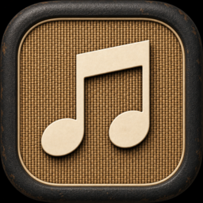

basketweave doesn't collect, store, or share your personal information. Here's exactly what the app does and why.
Effective date: July 23, 2026
basketweave is an independent app, available for iOS and Android, that lets you play music from your own Apple Music library. It is not made or endorsed by Apple Inc. This policy applies to both versions of the app and explains what information basketweave accesses and how it's used.
To play your music, basketweave uses Apple's own MusicKit sign-in and playback components. When you sign in, you authenticate directly with Apple using your Apple ID — basketweave never sees or stores your Apple ID password. Once signed in, the app requests your personal Apple Music library and playlist information directly from Apple's servers in order to display and play your music.
An active Apple Music subscription is required for the app to function, on both iOS and Android.
basketweave stores the following information locally on your device only:
None of this locally stored information is sent to us or to any third party. It never leaves your device except when the app streams music directly from Apple's servers, which is required for playback to work at all.
basketweave contains no advertising and no analytics or tracking software of any kind. We don't collect, sell, or share your data with anyone. We don't operate our own user accounts or servers — all authentication and music delivery happens directly between your device and Apple.
basketweave requests only what it needs to play music reliably:
basketweave is designed to be set up and operated by a parent or guardian using their own Apple Music account. It is not directed exclusively at children, and signing in requires an adult's existing Apple ID and Apple Music subscription.
You can sign out of Apple Music at any time from within the app. Uninstalling the app, or clearing its storage from your device's app settings, permanently removes all locally stored playback and playlist data.
If this policy changes — for example, if in-app purchases are introduced — this page will be updated and the effective date above will change accordingly.
Questions about this policy?
basketweave.app@proton.me